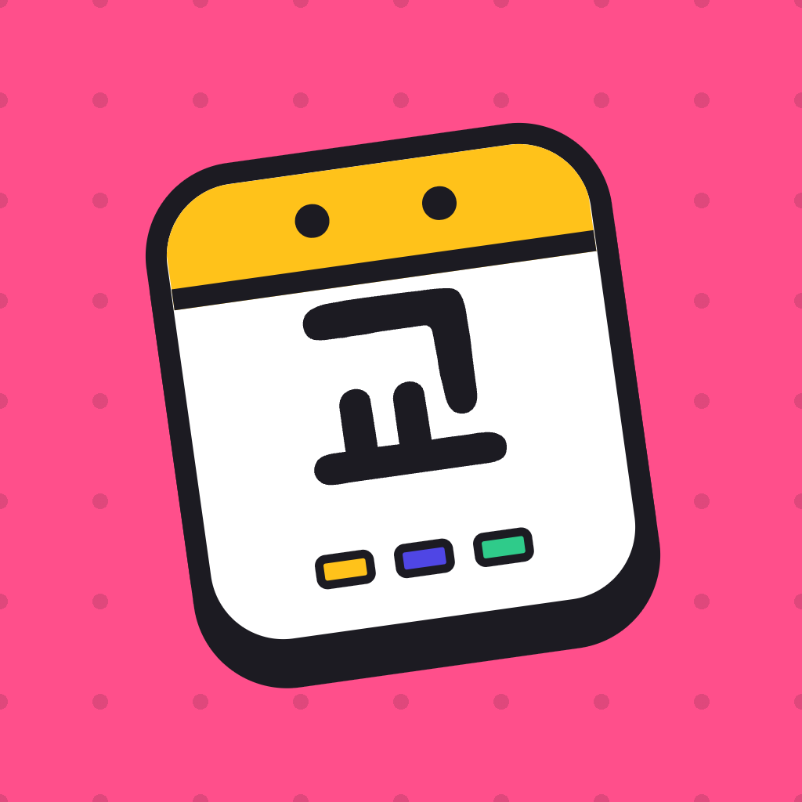

GyodaeroLook for your question below first, and email us if it's still not solved. We usually reply within 1–2 days.
Contact us at contact@luraai.io
Tap the repeat button at the top right of the calendar › Pattern settings, tap the chips to change the pattern, then tap "Fill 1 year of calendar". Days you've changed yourself (★) stay as they are.
Press and hold a date and choose a shift. The free version allows up to 2 patterns, and one-off edits are available with PRO.
Check that Gyodaero notifications are turned on in Settings › Notifications, and that Gyodaero is allowed in your Focus mode. Automatic alarm sync is a PRO feature.
Tap Settings › Restore purchases. With the same Apple ID, it's restored at no extra charge.
If iCloud sync is on, they move over automatically. Or save calendar_backup.json with Settings › Create backup file, then tap "Restore from backup" on the new device.
In Pay › Settings, check that the base hourly wage, night multiplier, and holiday premium conditions match your employer's rules. The result is a rough estimate for reference.
Apple handles in-app purchase refunds. You can request one at reportaproblem.apple.com.
Open Gyodaero on your iPhone once; it sends your schedule to the watch. If it still doesn't appear, check that the watch app is installed and that your iPhone and watch are paired.
iPhone with iOS 17 or later · iPad with iPadOS 17 or later · Apple Watch with watchOS 10 or later